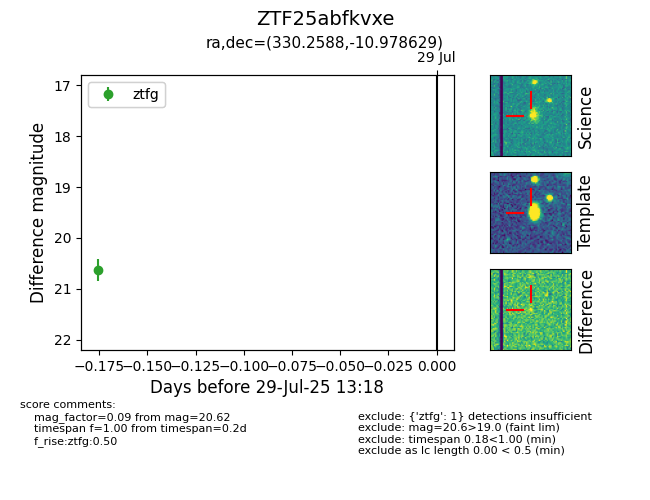

Target ZTF25abfkvxe at 2025-07-29 13:18, see:
FINK: fink-portal.org/ZTF25abfkvxe
Lasair: lasair-ztf.lsst.ac.uk/objects/ZTF25abfkvxe
ALeRCE: alerce.online/object/ZTF25abfkvxe
alt names
ZTF25abfkvxe (ztf,fink)
coordinates:
equatorial (ra, dec) = (330.2588,-10.97863)
galactic (l, b) = (46.4709,-46.88299)
photometry
last ztfg=20.62
1 ztfg detections
